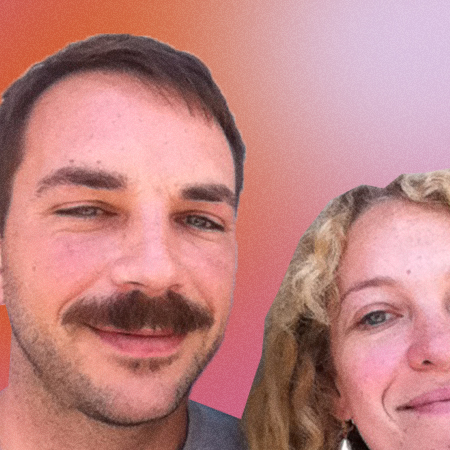
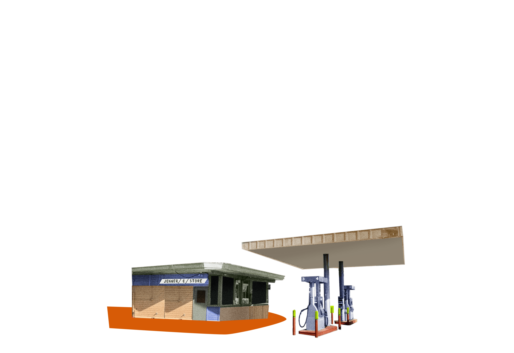

Episode 4
Flora
A story of leaning into love, embracing change, and letting your heart lead you.
In San Francisco, Danielle meets up with journalist Flora Tsapovsky. Diving deep into love stories, global moves, and what it’s like restarting a career in a country and language that isn’t your own, Tsapovsky shares a story fit for a romantic comedy. Here’s the story of a woman who trusted her gut, followed her heart, and was courageous enough to start again.
Meet the People

I’m Danielle Prescod. This is
a Vox Creative production with Straight Talk Wireless.
Episode 4
Act 1
[ THE GAS STATION DOOR DINGS AS CUSTOMERS FILE IN. A REFRIGERATOR HUMS IN THE BACKGROUND. ]
Larry
Come in the store. Jenner Sea Store. World famous Jenner Sea Store.
Flora
World famous! Yes.
I’m at a gas station in the coastal town of Jenner, California with Flora Tsapovsky. This gas station is the only store for miles in a town of about 130 people, and a well-known stop for both locals and roadtrippers.

Larry
We got some souvenirs on the wall.
Flora
I feel like it's changed a bunch and also did not change somewhat.
Larry
A lot of souvenirs, fishing tackle. Lot of Sonoma, very good wines.
Flora
This is a historic picture of how this used to look in 1938!
The door constantly dings as people pay for their gas, grab snacks, and then leave to take a selfie in front of the winding Russian River across the street.
Danielle
That sign over there says no restroom.
Flora
*Laughs*
Danielle
So is that the bathroom that you used?
Flora
Yes...
Yeah... about this bathroom.
We’re all taught a story has three parts.
But life just isn’t that linear.
What happens when the
middle, or a bathroom in the middle of nowhere,
is just the beginning?
Flora lived here in Jenner for a little while. She passed through for the first time nine years ago on a backpacking trip across the US.
Danielle
And this used to be like your office space, like, right? You must have sat here to do your work.
Flora
Yes, so now there's a big meat slicer. What is this back here? What, why is it here? It's taking over my old space.
Yeah, so this chair you can see here, it's like the swivel chair you can bring up, but I swear to God, it's been the same since I came here for the first time ever. And so like, drive it up and sit here and work on my laptop and try to figure out my life. My new life, I suppose.
Flora’s life changed at this gas station.
Or rather, Flora changed her life at this gas station. At first, I thought that this was a story about destiny or fate. But it’s not, even though it might feel like that at times.
It’s a story about how Flora creates her own adventures.
Flora
First of all, I choose my destinations with my gut feeling, right? Like, I don't ever go to the places everyone talks about or says I should go, you know.
Solo, go-with-your-gut traveling is Flora’s M.O. As soon as she feels inspired, she drops everything and books a flight. She’s done this in New Zealand, Australia, Thailand...
Flora
I’ve been to remote destinations, I've been to just a random array of places that something like, struck me. And then I plan, but I try not to overplan.
Like, when I used to backpack in my earlier days, I would just plan the very first, and then I would commit to ambiguity, right?
Flora still “commits to ambiguity”. When I met Flora, she was preparing for a 25-day trip to Costa Rica. To me, 25 days seems like a wild amount of time, but what’s even wilder is that she leaves plans up in the air because she truly enjoys unpredictable situations.
When she’s not backpacking, Flora’s a culture writer. You can read her work in Elle, Bon Appetit, Wired, and InStyle.
She writes stories like, “The Pandemic Didn’t Kill The Bra,” that don’t just get clicks, they go viral. And she’s a professor, schooling college students on fashion journalism and social media at the Academy of Art University.
Flora
Um, I feel like I ended up at a place I would have never dreamt I'd be in if you asked me as a young woman in Israel in my late 20s. You know, I live in the States, which is a country I've always been fascinated by.
I still hustle a lot. But I also teach, like, people who were born in America how to write and how to do social media strategies, which is still, sometimes I pinch myself and I'm like, I can't believe I'm doing it.
Flora lives near San Francisco, in a sun-drenched home with a view of the Golden Gate Bridge. She shares it not with rotating backpackers, but with her young child and her husband, Tom.
Not to call him out or anything, but Tom has all the markings of a dad wrapped around his daughter’s finger.
Tom
Everything that we've done so far to get to this point has been a deposit on the greater picture of the joy that's to come with my daughter.
I really hope I get the opportunity to see her grow old and see her take some of these leaps, and face some of the challenges that we've gone through, and hopefully help her as best as possible with that, through, through these odd experiences that have been the collection of my life and my wife's life.
Flora’s picturesque life in the Bay Area is a far departure from where she first began her life as a traveler, emigrating out of the USSR with her Jewish family.
Episode 4
Act 2
Flora was born in Moscow. Russia was, and is, rife with antisemitism. So when Mikhail Gorbachev opened the borders of the USSR, 1.6 million Jewish people left. Around 979,000 of them immigrated to Israel. Flora and her parents were three of them.
Danielle
Do you remember like, what you thought about moving? Were you excited? Were you nervous?
Flora
Mm, I was nervous to leave, you know, my favorite friends and teacher, and like, I did not know what Israel was going to be like.
Like, oh, one thing I remember a lot of people thought is that there's a lot of like, oranges growing on trees right on the street in Israel, right? And so, it was warm. So I pictured it to be this like, exotic, you know, other place I'm just going to go and explore.
Danielle
And was it when you got there, an exotic, other place?
Flora
Well, Israel knows how to do it, right? So when you land, there's like, palm trees everywhere, which immediately gets you thinking, oh, wow, this is not, you know—Mother Russia with, its like birch trees and snow everywhere, right? It was very hot. We landed in March, but it was already really hot.
So, there was a crazy story about how we ended up living at this person's house in Israel. Would you like to hear the story really briefly?
This story is bonkers. Flora tells me that while she and her parents were waiting for their bags at the airport, a man approached them and started asking all of these personal questions.
Flora
"How many people are you? Where are you from? Do you have any luggage? Do you speak any English?," all of these things. And my parents kind of just rolled with the punches, you know, and they said, "Yeah, we speak English," even though they did not. And no, we don't have much luggage. They kind of felt where this was going, you know.
And so, this person goes, "I am like, a messenger for this government member, and the government member is looking to adopt a Russian family." Because in '91, there was a huge wave of immigration to Israel from Russia. And so, this person wanted to literally, like, adopt a small family to live in his house and help them, right?
[ AT THE SAME TIME ]
Danielle
Whaaat?
Flora
That's insane.
Danielle
Yeah.
Flora
It is insane. And my parents, you know, they were like, what, 30 at the time, and like, younger than I am right now. And I was, what, like almost eight. And they said, okay, you know. And I guess we fit the bill because we were just three people and not like a huge family.
And so they said, okay, and we got ourselves into a taxi. This guy got our luggage, and we just drove to this town we'd never heard of, in the south of Israel instead of going to another city, where my mom's friend was waiting for us. And so, we get there and it's like a big villa, right. And this guy and his family are super happy. “Welcome, welcome.”
They gave us like, kind of a loft studio in the villa to live in, and we were just living there for half a year, right? Not paying rent, not like, searching for work or scrambling. My parents got a chance to go and study Hebrew properly.
Danielle
I can't help but think of this like, connection between this stranger being like, really kind to you, and then also how you couchsurf and you, you know, travel around and depend on the kindness of strangers. It all kind of ends up working out.
Flora
You know, I never thought about it this way. But it definitely has been like, a formative experience for me, because it was so surreal. The key for this was human kindness, for sure.
When Flora graduated high school, it was time to enlist in the army - that’s state-mandated service for Jewish Israeli citizens.
Flora
So, if you really want to, you can skip the Army by doing a bunch of unsavory things, like claiming mental health issues. In some cases. You can get married, you can get pregnant, you can become an Orthodox Jew. There's all these ways, right, for people who don't want to go.
But this is where my like, immigration background comes in. My dad was completely unflexible about me going. He said, "You have to go. We came to this country. This country gave us so much. And you have to give back.
Danielle
Wow. How did you feel about that?
Flora
Um, I was not very happy about it. And I was 18 years old, and I didn't see myself as Army material. And also, if you go to the Army in Israel, the Army pays for your first year of college, which is not a small thing. So, I went to the Army. I was the worst soldier you can imagine!
“Soldier” feels like a loose interpretation. The Israel Defense Forces stationed Flora in Tel Aviv; she actually never fought in a combat zone.
Flora
It shaped me in the ways that I feel like the Army did not intend to shape me in. And that was to kind of make me assured that I have to march to the beat of my own drum, pretty much. So, I walked away from the Army being sure that a big system or a kind of a hierarchy system, rather, is not for me at all.
As soon as her service ended, Flora jumped into her twenties. You know, dance floors and young love.
And? A masters degree and a demanding editorial job.
Flora
You know, I did not yet have the vocabulary for burnout, or toxic work culture, or any of the things we now talk about so freely. But I was feeling that. I was like, feeling I have to get away, right?
Flora packed her suitcase and started making calls.
Flora
I had a really good friend in Israel who came back to Portland. I had a friend who moved to LA, a friend who moved to Vegas, and a really good friend from Australia who moved to New York City to work for the U.N., and they all said the same thing to me, "Come visit me," you know. But they must have said it casually. But I took it seriously.
So I just started looking where they all live. And then I just had this vague idea that I'm just gonna hit them all up, right? So...
Danielle
Wow.
Flora
Yes
Danielle
So, knock knock, Flora's here. [laughs]
Flora
Well, yes. So, I started posting things on Couchsurfing at the time saying that I want to do a road trip from Portland to San Francisco. And these two guys replied, and I made a plan with them.
We stayed in these crappy motels we found and just had a really fun time basically together, completely platonic, super funny, great experiences. And since they were Swedish, also great financial planning, and everything was very responsible and everything.
So I felt like I could relax and ease into life a little bit after, again, having to balance so many different things this past year. And so one of the last legs of our journey...
This is unfathomable to me. I’m a born and raised New Yorker, so I have an innate and acute sense of mistrust when it comes to people I don’t know. But if I’ve learned nothing else from being with Flora, it’s that maybe not everyone you meet on the road is a serial killer.
Anyway, Flora and her new...totally safe...friends headed out to Santa Rosa.
Flora
And so, we were driving this really dark patch from Mendocino County to Sonoma County, and I started to feel like I want to pee...
It was the middle of the night and they drove for what seemed like hours trying to find literally anywhere with a bathroom. Most of the stores they drove by looked closed until...
Flora
There are no lights. It was the only thing lit up, kind of barely so, even. Like, just the light from the inside was kind of glimmering through the windows, right? So, I was like, ok this is it...
It was the Jenner Sea Store gas station. Flora ran inside, where there was only one employee working the night shift. She asked if she could use the bathroom.
Flora
And he said, "There's bathrooms across the street at the recreation center or the post office," something like that. So if they were unlocked, I would have just peed and moved on with my life, okay?
However, they were locked! I go back into the gas station, and I looked this guy in the eye—I'm like, "The bathroom is locked."
And then he says, "Well, there's the porta potties. But the porta potties are not a place for a lady. So I will let you use my own private restroom back here."
The employee’s name? Tom.
Episode 4
Act 3
Tom
I had no internet, no cell phone connection, no regular TV. I was watching a lot of classic movies. So, I feel like when I had the opportunity to really exercise chivalry, I believe that's, that's kind of how, how our connection started.
And I made some stupid off the wall comment that, “A Porta John is no place for a lady.”
It’s an IRL meet cute! Flora and Tom started talking, and they hit it off. For about ten minutes. Flora had to get back to the two fiscally-responsible Swedish men waiting for her in the car.
Flora
And then I asked him if he has Facebook or something. And he said he doesn't have Facebook, and he wrote me his email on this like, tiny crumpled piece of paper and I put it in my wallet.
Flora’s first email to Tom wasn’t a casual “it was so nice meeting you!” type of message. She basically wrote a one-page autobiography about who she was and why she was on this road trip. Tom decided to respond in kind.
Tom
I had a great amount of time on my hands. So I carefully crafted some correspondence to her. Tried to do it with love and respect.
Flora
And I clearly remember, I had tears in my eyes when I read his email, right? Because it was so well written and so thoughtful. And he kind of took the same tone I did and told me about himself, right? What got him to this life. And it was a very, like, romantic email without anything romantic in it.
And I was like, oh, this guy, not only is he cute, I think, if I remember his face still, but also, he's smart, right, which is so important to me in anybody, and especially romantic partners.
And so, I was pleasantly surprised by all of that.
Flora finished her road trip and then headed over to the East Coast. All the while, she and Tom kept up their e-flirting. She had initially planned to fly back to Israel and get back to her daily life there.
But then came an offer made for our free-spirited Flora.
Tom
But yeah, I think we, we wrote each other for maybe about three weeks before I proposed the question of her coming back to stay on my couch, which didn't actually exist. I was in the process of obtaining a couch at the time.
Flora
And I remember thinking about it seriously. Like I could just go back home to my apartment, and I feel like a major part of it was being very curious about him and wanting to know him better, but also just like, knowing that what waits for me at home is the familiar and the things I've already been—they've been done.
Instead of going back to Israel, Flora moved to Jenner.
Allow me to rephrase. After a 10-minute conversation at a gas station and three weeks of emails, Flora uprooted her life, went back to Jenner, and then moved into Tom’s barebones loft.
I’m sorry, but that’s the beginning of a horror movie to me. And, at the time, Flora’s parents agreed.
Flora
“Just let us know you’re safe!” And everything, they were sure I'm gonna be on the news. Like, you know. They were sure I was going to be murdered mercilessly.
Even Tom picked up on the murder vibes.
Tom
Did I ever feel like I was gonna get murdered? Yes.
Ok, so I’m not the only one with stranger danger on the brain. But that didn’t stop them! Flora started sleeping on Tom’s couch - yes, Tom managed to get a couch in time.
Flora
We kind of were realizing, I guess, we were attracted to each other and then we had like a trip, a motorcycle trip that he took me on the third day to show me around.
And yeah, and that was the end of our pretending! I just, I was like trying to save face and not, like, kiss him too soon. But it was pointless...
In three days, Flora went from crashing with Tom to living with Tom. They just...got together. Just like that.
Flora
Yeah. Maybe what people don't realize about the situation sometimes is that like when you have nobody to talk to about what's going on, there's literally no like, “what people are going to think?” aspect.
Like nobody would have known what I was doing here at all. So I was like, okay, just go with what I feel, you know, instead of like calling my friend and saying, “should I kiss him?” “This guy you know, this is what's happening.”
There was no back like back channel at all. It's just you. So I feel like that was speeding things up a little bit. But in the right direction ultimately.
The isolation of Jenner was certainly useful for Flora’s love life, but it came with a whole lot of inconveniences. For starters, Flora had to trek down to the gas station if she wanted to work on her thesis because it was the only place with WiFi.
Danielle
Okay, but you had some other interesting aspects of your life here because the WiFi was one thing but you also had no running water. So what did you do for water?
Flora
No running water, which meant we had to Wet Wipe all of our like hands and faces in the morning. We did have a restroom but not a sink, so lots of Wet Wiping, showering at friends’ houses or showering at random places and we used to wash our dishes here.
Danielle
I still don't believe it.
Flora
I still don't believe it. And I did it.
Well, this was clearly a nightmare. But to Flora and Tom, the lack of basic necessities, like running water and WiFi, was a small price to pay for a life in Jenner.
Flora
Ah, yes. Jenner is extremely special for a number of reasons. One, its geographical location is quite insane. So this is where the Russian River that runs all alongside Granville falls into the ocean. So you can see from the house we lived in, we could see the river falling into the ocean.
And it doesn't feel like real life at all. It feels like kind of a place frozen in time, you know, and the lack of reception speaks to that.
Tom
It's the edge of the continent. It's quiet, but yet, you hear constant wave noise, and the ocean is constantly speaking to you.
There's sun when you don't want it. There's fog when you do want it. It seems like it is the end of the earth, and you could be very well the last person on earth.
Most of the people either residing there or passing through have very little concern, worldly concern, or even awareness of time.
Flora and Tom have lived in the Bay Area for years now, and their life is objectively different - for one thing, they have a kid - but Flora hasn’t lost that soul urge to explore.
Danielle
Do you have like, a travel self? Like, is travel Flora different than everyday Flora?
Flora
No. I feel like the everyday—like, the travel Flora is in me all the time. But it just doesn't get as much airtime, you know what I mean? It's just like, yeah, it's—I feel like travel Flora is probably the best part of me.
So, what’s next for Flora?
25 days, solo, in Costa Rica.
But beyond that?
She doesn’t know.
And in that classic Flora way, she’s down for whatever comes next.
Flora
Well, there's always more than this. In my book, like, there's always bigger publications I can conquer. There's always bigger things I could do, reach more audiences. Live in San Francisco itself.
And then on a more philosophical level, there is more than this in like, developing as a person, you know. And like, my identity and my understanding of myself expanded so much with this big change. I'm always wondering what's more and what's next after this that I could still apply myself to.
Danielle
Yeah. And it worked out for you, so why not do more of it?
Flora
[laughs] Yeah, I guess. I guess it did.
© 2021 Vox Media, Inc. All Rights Reserved
Editorial Team
Art Direction / Illustration
Lauren O’Connell
Product Design
Uy Tieu